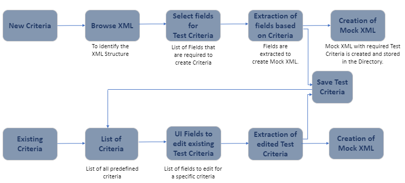
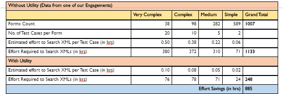
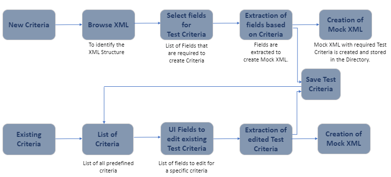
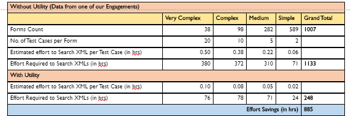

Launch

Create any number of Mock XMLs based on the requirement without manually altering the existing XML.

It only accepts xml file as an input.
Folder structure is mandatory as we are not using any database.
While creating search criteria, logical grouping of conditions is not available.
Test Data Extraction from the Test bed
Asset Work flow:


- Softwares required - java(jdk 1.8v), tomcat 9.0.
- Languages used - html, css, jsp, java, servlets, javascript, jquery, ajax, bootstrap.
- Files required - A base XML to identify its structure.
- Jars required - Saxon jar files(saxon9he, saxon9-test and saxon9-xqj).
- Folder structure to be created to store crieria files.
- TestBed(Group of xmls) needs to be present and the path to it needs to be configured in the code.
Prerequires for the demo: Before the demo have a sample XML
- We will walk the audience through the front end to explain how to upload Sample file and create test criteria
- For demo purpose, we will select the directory in which we have to create the Mock XML
- We will create a criteria with few fields in XML and show how Mock XML is generated with values specified.
- We will also show how a saved criteria can be retrieved and create a Mock XML
- As next steps we will walk them through the main code which will enable the audience to understand the code at high level.
- The Demo time is 30 min to go over the kit and all the flow